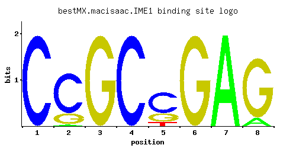

← All factors / TF RECORD
IME1
YJR094C
Master regulator of meiosis that is active only during meiotic events, activates transcription of early meiotic genes through interaction with Ume6p, degraded by the 26S proteasome following phosphorylation by Ime2p
01 / RECOMMENDED MATRIX
Best-performing DNA-binding model.

Fisher’s P-value4.34e-05
Information content15.87
Max PWM score12.27
Recommended cutoff11.38
View and copy the recommended matrices ↘
Position frequency matrix (PFM)
A | 0.001 0.018 0.001 0.001 0.001 0.001 0.997 0.118 C | 0.997 0.770 0.001 0.997 0.631 0.001 0.001 0.001 G | 0.001 0.211 0.997 0.001 0.257 0.997 0.001 0.880 T | 0.001 0.001 0.001 0.001 0.111 0.001 0.001 0.001
Position count matrix (PCM)
A | 0 1 0 0 0 0 99 11 C | 99 77 0 99 63 0 0 0 G | 0 21 99 0 25 99 0 88 T | 0 0 0 0 11 0 0 0
Position weight matrix (PWM)
A | -5.77 -2.88 -5.77 -5.77 -5.77 -5.77 1.14 -1.00 C | 1.71 1.45 -5.19 1.71 1.25 -5.19 -5.19 -5.19 G | -5.19 0.16 1.71 -5.19 0.36 1.71 -5.19 1.59 T | -5.77 -5.77 -5.77 -5.77 -1.06 -5.77 -5.77 -5.77
02 / COMPARATIVE BENCHMARKS
Alternative candidate matrices 2
Historical matrix candidates from the original ScerTF database. Expand a source to inspect its original logo, scores, and matrix values.
IME1_AFoat et. al.P = 0.0166View matrix ↘
IME1_BFoat et. al.P = 1View matrix ↘
03 / EXPERIMENTAL CONTEXT
Gene-level annotations and interactions.
Genes bound in ChIP-chip experiments 5 genes
YBR253W, YDR206W, YGR095C, YGR096W, YGR125W
Genes affected by TF deletion 30 genes
YDR034C-D, YPL016W, YBR128C, YLL034C, YPL283C, YLR156W, YNL339C, YMR100W, YDR076W, YOR043W, YJR094C, YJR148W, YNL278W, YOL114C, YOR329C, YIL022W, YLR160C, YPL092W, YCR024C-A, YDR022C, YKR026C, YKR093W, YML013C-A, YOL119C, YPR164W, YLR297W, YLR117C, YOR343C-B, YOR034C, YFL068W
Predicted TF–TF partners 5 genes
DAL82, RSC3, RSC30, SUT1, YPR196W